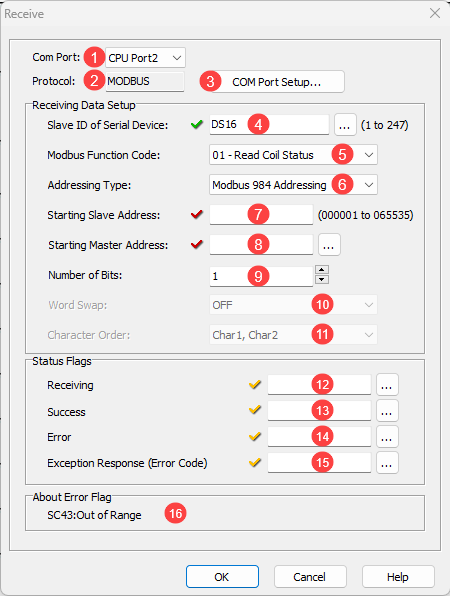
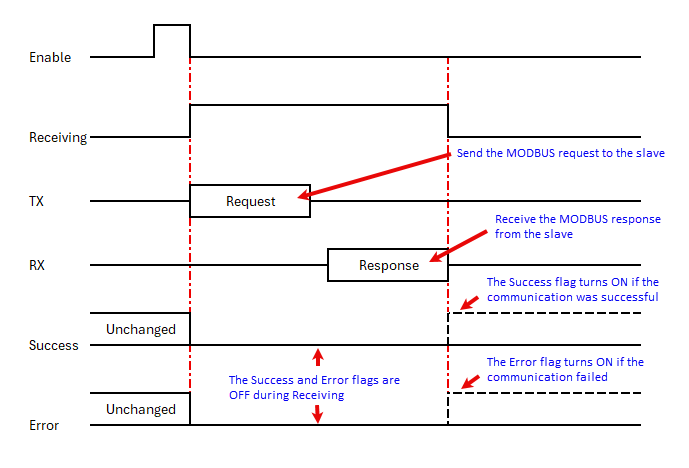

Topic: CL180

| Receive Instruction: MODBUS RTU |
Topic: CL180
|
The Receive instruction allows you to use Com Port 2 or 3 (if available) on the CLICK CPU modules, or Com Port 1 or 2 of a C2-DCM module, as a network master and read data from external devices. The CLICK CPU modules support the MODBUS (RTU) and ASCII protocols. This help topic covers the MODBUS protocol. Please refer to the help topic Receive Instruction: ASCII for the ASCII protocol.
If you use a Com Port on the CLICK CPU modules as a MODBUS slave, you don’t need to use this instruction. Setup the Com Port to match the configuration of the MODBUS network and assign a unique node address.
|
|
Note: For the Com Port wiring info, please refer to the CLICK PLC Hardware Manual or CLICK PLUS PLC Hardware Manual. Note: If you need more detailed information about the MODBUS protocol, we recommend to visit the following web site: www.MODBUS.org |
|

1 Com Port: Click the down arrow to select a Port from the available list. Port2 is default.
2 Protocol: This field displays the Protocol Type that is currently selected. The two choices are MODBUS and ASCII. To change from MODBUS to ASCII, see Item 3.
3 COM Port Setup: Click on this button to open the Com Port Setup window shown below. From this window click on the down arrow for the Protocol field and select ASCII or MODBUS
.
|
|
Note: If the Protocol parameter is grayed out, it means there is at least one Receive or Send instruction assigned to the Com Port already. If you still want to change the Protocol, please delete all Receive/Send instructions first. |
|
4 Slave ID (1-247): Select the Node ID of the MODBUS slave that you want to read data from. You can click the address picker [...] or enter a DS register to make this value a variable to enable communications with up to 247 different Modbus devices. If the value in the DS register is outside the range of 1-247, SC43 "Out of Range" will be set to TRUE.
5 MODBUS
Function Code: Select one of the following MODBUS
function codes:
01
– Read Coil Status
02 – Read Input Status
03 – Read Holding Registers
04 – Read Input Registers
6 Addressing Type: Select one of the following MODBUS Addressing Types:
|
Addressing Type |
Description |
|
MODBUS 984 Addressing |
This Addressing is patterned after the Modicon PLC addressing, which many devices support. 0***** are Coils (Read/Write). 1***** are Input Bits (Read only). 3***** are Input Registers (Read Only) 4***** are Holding Registers (Read/Write) |
|
MODBUS Hex Addressing |
This Addressing is patterned after what the MODBUS protocol actually requests, which is simply a Function Code + an Offset. |
|
CLICK Addressing |
If the MODBUS slave is the CLICK PLC, we recommend to use this CLICK Addressing because you can use the Address Picker to select the Starting Slave Address. |
7 Starting Slave Address:
Enter the Slave Address
to start reading data from. The table below shows the
valid Slave Addresses.
If CLICK Addressingis selected, you can use the Address
Picker by clicking the  icon.
icon.
|
MODBUS Addressing |
Function Code |
|||
|
01 |
02 |
03 |
04 |
|
|
MODBUS 984 |
1 to 65535 |
100001 to 165535 |
400001 to 465535 |
300001 to 365535 |
|
MODBUS Hex |
0h to FFFEh |
0h to FFFEh |
0h to FFFEh |
0h to FFFEh |
|
CLICK |
X, Y, C, T, CT and SC |
X, Y, C, T, CT and SC |
CTD, DS, DD, DH, DF, SD, TD, YD and TXT |
CTD, DS, DD, DH, DF, SD, TD, YD and TXT |
8 Starting Master Address:
Enter the Starting
Memory Address of the Master
CLICK CPU module to save the read data from the MODBUS slave. You
can use the Address Picker
by clicking the  icon.
icon.
|
Function Code |
|||
|
01 |
02 |
03 |
04 |
|
Y and C |
Y and C |
CTD, DS, DD, DH, DF, SD, TD, YD and TXT |
CTD, DS, DD, DH, DF, SD, TD, YD and TXT |
9 Number of Bits: Enter the size of the data to read from the MODBUS slave.
10 Word Swap: This option is only available when the Starting Master Address is a DD or DFMemory Address. These Memory Addresses have 32 bit data length, so they can store the data read from two registers in the MODBUS slave. You can swap the order of the data to be stored in the DD or DF Memory Address.
11 Character Order: This option is not available with the current Firmware Version.
12 Receiving: Assign a C bit as the Receiving flag. This C bit turns ON when the Com Port is sending a read request to a MODBUS slave with this instruction. Please refer to the Timing Chart shown below.
|
|
Note: This Receiving flag is OFF when another Receive instruction is requesting data from the MODBUS slave. |
13 Success: Assign a C bit as the Success flag. This C bit turns ON after the Com Port received data from the MODBUS slave successfully. It stays ON until the instruction is re-enabled. Please refer to the Timing Chart shown below.
14 E rror: Assign a C bit as the Error flag. This C bit turns ON after the Com Port could not receive data from the MODBUS slave successfully. It stays ON until the instruction is re-enabled. Please refer to the Timing Chart shown below.
15 Exception Response (Error Code): Assign a DS or DD Memory Address to store the Exception Response from the MODBUS slave.
16 About Error Flag If you have defined the SlaveID using a DS address, and that value is outside the range of 1-247, System Bit SC43 will be set TRUE.
|
|
Note: Each MODBUS slave connected to the CLICK PLC would support a different set of the Exception Response. Please refer to the User Manual/Specifications of each MODBUS Slave. If you are using a CLICK PLC as a MODBUS Slave, please refer to this topic for the Exception Response that the CLICK PLC supports. |
